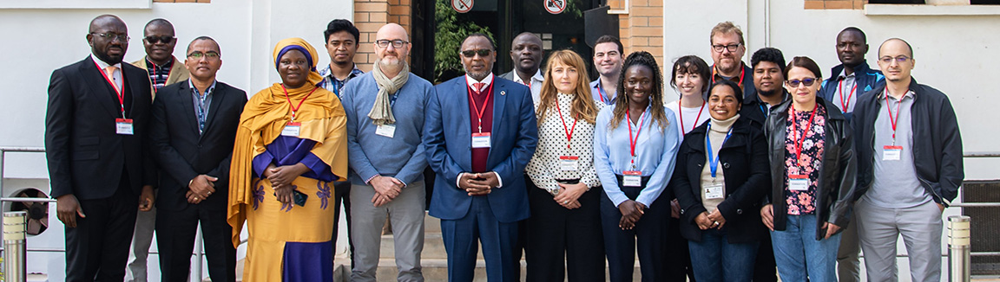

Poliovirus Sequencing Consortium Training Material
Slides
The slides that are used during training visits for direct detection and nanopore sequencing (DDNS) can be downloaded here. We will update and add further material as our work progresses. Please use our protocols.io workspace to ask any questions or provide feedback. Note, these slides are used by the PSC and trainers during DDNS workshops. They are provided here for your own use and information, but do not consitute formal training in DDNS without delivery of the training by the PSC or WHO GPLN.